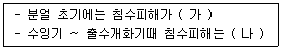
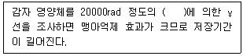
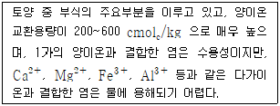
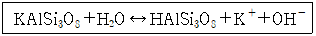
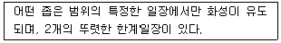
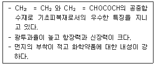
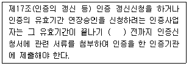
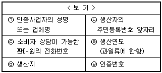

유기농업기사 (2021-05-15 기출문제)
1과목: 재배원론
1. 작물의 영양번식에 대한 설명으로 옳은 것은?
- 종자 채종을 하여 번식시킨다.
- 우량한 유전특성을 영속적으로 유지할 수 있다.
- 잡종 1세대 이후 분리집단이 형성된다.
- 1대 잡종벼는 주로 영양번식으로 채종한다.
(정답률: 74%)

2. 다음 중 T/R율에 관한 설명으로 옳은 것은?
- 감자나 고구마의 경우 파종기나 이식기가 늦어질수록 T/R율이 작아진다.
- 일사가 적어지면 T/R율이 작아진다.
- 질소를 다량시용하면 T/R율이 작아진다.
- 토양함수량이 감소하면 T/R율이 감소한다.
(정답률: 56%)
3. 대기 오염물질 중에 오존을 생성하는 것은?
- 아황산가스(SO2)
- 이산화질소(NO2)
- 일산화탄소(CO)
- 불화수소(HF)
(정답률: 49%)
4. 이랑을 세우고 낮은 골에 파종하는 방식은?
- 휴립휴파법
- 이랑재배
- 평휴법
- 휴립구파법
(정답률: 73%)
5. 도복의 대책에 대한 설명으로 가장 거리가 먼 것은?
- 칼리, 인, 규소의 시용을 충분히 한다.
- 키가 작은 품종을 선택한다.
- 맥류는 복토를 깊게 한다.
- 벼의 유효분얼종지기에 지베렐린을 처리한다.
(정답률: 75%)
6. 다음 중 CO2 보상점이 가장 낮은 식물은?
- 벼
- 옥수수
- 보리
- 담배
(정답률: 62%)
7. 녹체춘화형 식물로만 나열된 것은?
- 완두, 잠두
- 봄무, 잠두
- 양배추, 사리풀
- 추파맥류, 완두
(정답률: 60%)
8. 내건성이 강한 작물의 특성으로 옳은 것은?
- 세포액의 삼투압이 낮다.
- 작물의 표면적/체적 비가 크다.
- 원형질막이 수분투과성이 크다.
- 잎 조직이 치밀하지 못하고 울타리 조직의 발달이 미약하다.
(정답률: 63%)
9. 벼의 침수피해에 대한 내용이다. ( )에 알맞은 내용은?

- 가 : 작다, 나 : 작아진다.
- 가 : 작다, 나 : 커진다.
- 가 : 크다, 나 : 커진다.
- 가 : 크다, 나 : 작아진다.
(정답률: 67%)
10. 다음 중 벼의 적산온도로 가장 옳은 것은?
- 500 ~ 1000℃
- 1200 ~ 1500℃
- 2000 ~ 2500℃
- 3500 ~ 4500℃
(정답률: 59%)
11. 비료의 3요소 중 칼륨의 흡수비율이 가장 높은 작물은?
- 고구마
- 콩
- 옥수수
- 보리
(정답률: 72%)
12. 토양이 pH 5 이하로 변할 경우 가급도가 감소되는 원소로만 나열된 것은?
- P, Mg
- Zn, Al
- Cu, Mn
- H, Mn
(정답률: 65%)
13. 벼의 생육 중 냉해에 출수가 가장 지연되는 생육단계는?
- 유효분얼기
- 유수형성기
- 유숙기
- 황숙기
(정답률: 51%)
14. 나팔꽃 대목에 고구마 순을 접목하여 개화를 유도하는 이론적 근거로 가장 적합한 것은?
- C/N율
- G-D균형
- L/W율
- T/R율
(정답률: 58%)
15. 다음 중 요수량이 가장 큰 것은?
- 보리
- 옥수수
- 완두
- 기장
(정답률: 53%)
16. 비료의 엽면흡수에 대한 설명으로 옳은 것은?
- 잎의 이면보다 표피에서 더 잘 흡수된다.
- 잎의 호흡작용이 왕성할 때에 잘 흡수된다.
- 살포액의 pH는 알칼리인 것이 흡수가 잘 된다.
- 엽면시비는 낮보다는 밤에 실시하는 것이 좋다.
(정답률: 71%)
17. 개량삼포식농법에 해당하는 작부방식은?
- 자유경작법
- 콩과작물의 순환농법
- 이동경작법
- 휴한농법
(정답률: 72%)
18. 작물의 수량을 최대화하기 위한 재배이론의 3요인으로 가장 옳은 것은?
- 비옥한 토양, 우량종자, 충분한 일사량
- 비료 및 농약의 확보, 종자의 우수성, 양호한 환경
- 자본의 확보, 생력화 기술, 비옥한 토양
- 종자의 우수한 유전성, 양호한 환경, 재배기술의 종합적 확립
(정답률: 71%)
19. 다음 ( ) 안에 알맞은 내용은?

- 15C
- 60Co
- 17C
- 40K
(정답률: 65%)
20. 작물의 내열성에 대한 설명으로 틀린 것은?
- 늙은 잎은 내열성이 가장 작다.
- 내건성이 큰 것을 내열성도 크다.
- 세포 내의 결합수가 많고, 유리수가 적으면 내열성이 커진다.
- 당분함량이 증가하면 대체로 내열성은 증대한다.
(정답률: 70%)
2과목: 토양비옥도 및 관리
21. 토양과 평형을 이루는 용액의 Ca2+, Mg2+ 및 Na+ 의 농도는 각각 6mmol/L, 10mmol/L 및 36mmol/L이다. 이로부터 구할 수 있는 나트륨흡착비(SAR)는?
- 2.25
- 9.0
- 9√2
- 69.2
(정답률: 52%)
22. 토양에 시용한 유기물의 분해를 촉진시키는 조건으로 가장 적절하지 않은 것은?
- 기후 - 고온다습
- 토양 pH – 7.0 근처
- 토양수분 – 포장용수량 조건
- 시용유기물 탄질률 – 100 이상
(정답률: 55%)
23. 농경지 토양유기물 유지를 위한 농경지 유기물 관리 방안으로 적절하지 않은 것은?
- 경운 최소화
- 농경지 피복
- 비료사용 억제
- 경사지에서의 등고선 재배
(정답률: 50%)
24. 토양조사 시 토양의 수리전도도를 직접 측정하지 않고 배수성을 판정하는 방법은?
- pH를 측정한다.
- 토양색을 본다.
- 유기물 함량을 측정한다.
- 토양구조를 본다.
(정답률: 43%)
25. 식물에 이용되는 유효수분으로서 토양입자 사이 작은 공극 안에 표면 장력에 의하여 흡수·유지되어 있는 토양수는?
- 중력수
- 모세관수
- 흡습수
- 결합수
(정답률: 59%)
26. 빗물이 모여 작은 골짜기를 만들면서 토양을 침식시키는 작용은?
- 우곡침식
- 계곡침식
- 유슈침식
- 비옥도침식
(정답률: 66%)
27. 토양층위에 대한 설명으로 틀린 것은?
- E층 : 규반염점토와 철, 알루미늄의 산화물 등이 용탈되며 최대용탈층이라고도 부른다.
- B층 : A층에서 용탈된 물질이 집적된다.
- C층 : 토양생성작용을 거의 받지 않는 모재층이다.
- O층 : 유기물 층위로 보통 A층 아래에 위치한다.
(정답률: 58%)
28. 물에 의한 토양침식의 종류가 아닌 것은?
- 면상침식
- 세류침식
- 협곡침식
- 약동침식
(정답률: 63%)
29. 표토 염류집적의 가장 큰 원인이 되는 수분은?
- 중력수
- 모세관수
- 흡습수
- 결합수
(정답률: 41%)
30. 다음에서 설명하는 부식의 성분은?

- 부식탄(humin)
- 풀브산(fulvic acid)
- 히마토멜란산(hymatomelanic acid)
- 부식산(humic acid)
(정답률: 57%)
31. 다음 반응식이 나타내는 화학적 풍화작용은?

- 산화(Oxidation)
- 가수분해(Hydrolysis)
- 수화(Hydration)
- 킬레이트화(Chelation)
(정답률: 60%)
32. 다음 필수식물영양소 중 다량영양소가 아닌 것은?
- S
- P
- Fe
- Mg
(정답률: 61%)
33. 토양에서 일어나는 질소순환에 대한 설명으로 옳은 것은?
- 토양유기물에 존재하는 질소는 우선 질산태질소로 무기화된다.
- 질산화작용에 관여하는 주요 미생물은 아질산균과 질산균이다.
- 질산태 질소에 비하여 암모니아태 질소가 용탈되기 쉽다.
- 통기성이 좋은 토양에서 질산화 작용은 일어나기 어렵다.
(정답률: 52%)
34. 밭토양의 유형별 개량방법이 가장 알맞게 짝지어진 것은?
- 보통밭 : 모래 객토, 심경, 유기물 시용
- 사질밭 : 모래 객토, 심경, 유김루 시용
- 미숙밭 : 심경, 유기물 시용, 석회 시용, 인산 시용
- 중점밭 : 미사 객토, 심경, 배수, 유기물 시용
(정답률: 59%)
35. 토양생성작용 중 일반적으로 한랭습윤지대의 침엽수림 식생환경에서 생성되는 작용은?
- 포드졸화 작용
- 라테라이트화 작용
- 회색화 작용
- 염류화 작용
(정답률: 60%)
36. Mg과 Ca을 동시에 공급할 수 있는 석회비료는?
- 생석회
- 석회석
- 소석회
- 석회고토
(정답률: 57%)
37. 습답에 대한 설명으로 틀린 것은?
- 지하수위가 높아 연중 담수상태에 있다.
- 암회색 글레이층이 표층 가까이까지 발달한다.
- 영양성분의 불용화가 일어난다.
- 유기물의 혐기분해로 인해 유기산류나 황화수소 등이 토층에 쌓인다.
(정답률: 42%)
38. 토양이 건조하여 딱딱하게 굳어지는 성질을 무엇이라 하는가?
- 이쇄성
- 소성
- 수화성
- 강성
(정답률: 59%)
39. 토양에서 일어나는 질소변환과정의 설명으로 옳은 것은?
- 질산화작용은 NH4+이 NO3-로 산화되는 과정이다.
- 암모니아화 반응은 공기 중의 N2가 암모니아로 전환되는 과정이다.
- 탈질작용은 유기물로부터 무기태질소가 방출되는 과정이다.
- 질소고정은 NH4+이나 NO3- 로부터 단백질이 합성되는 과정이다.
(정답률: 57%)
40. 토양오염원에서 비점오염원에 해당하는 것은?
- 폐기물매립지
- 대단위 가축사육장
- 산성비
- 송유관
(정답률: 64%)
3과목: 유기농업개론
41. 축산물 생산을 위하여 사일리지를 제조할 때 대부분의 두과 목초는 화본과 목초에 비하여 낙산발효형의 품질이 낮은 사일리지를 만드는데 그 이유로 적합하지 않은 것은?
- 완충력이 비교적 높기 때문에
- 단백질 함량이 많기 때문에
- 가용성탄수화물이 양이 적기 때문에
- 유기산 함량이 적기 때문에
(정답률: 30%)
42. 벼의 유기재배에서 벼멸구 피해를 줄이기 위한 실용적 방법이 아닌 것은?
- 벼멸구에 강한 벼종자를 사용한다.
- 논 주위에 유아등을 설치한다.
- 유기농어업자재를 활용한다.
- 1포기(株) 당 묘수(苗數)를 되도록 많게 하여 이앙한다.
(정답률: 63%)
43. 벼의 주요 해충 중 가해 부위가 다른 하나는?
- 흑명나방
- 벼애나방
- 애멸구
- 벼이삭선충
(정답률: 46%)
44. 일반적인 메벼의 염수선 비중은?
- 1.06
- 1.08
- 1.13
- 1.18
(정답률: 48%)
45. 유기가축과 비유기가축의 병행사육 시 준수하여야 할 사항이 아닌 것은?
- 유기가축과 비유기가축은 서로 독립된 축사(건축물)에서 사육하고 구별이 가능하도록 각 축사 입구에 표지판을 설치하여야 한다.
- 유기가축, 사료취급, 약품투어 등은 비유기가축과 공동으로 사용하되 정확히 기록 관리하고 보관하여야 한다.
- 인증가축은 비유기 가축사료, 금지물질 저장, 사료공급·혼합 및 취급 지역에서 안전하게 격리되어야 한다.
- 유기가축과 비유기가축의 생산부터 출하까지 구분관리 계획을 마련하여 이행하여야 한다.
(정답률: 69%)
46. 수경재배 중 분무수경이 속한 분류로 옳은 것은?
- 고형배지경이면서 무기배지경에 해당한다.
- 고형배지경이면서 유기배지경에 해당한다.
- 순수수경이면서 기상배지경에 해당한다.
- 순수수경이면서 액상배지경에 해당한다.
(정답률: 53%)
47. 사료의 단백질은 기본적으로 무엇으로 구성되어 있는가?
- 지방
- 탄수화물
- 무기물
- 아미노산
(정답률: 65%)
48. 유기원예에서 이용되는 천적 중 포식성 곤충이 아닌 것은?
- 고치벌
- 팔라시스이리응애
- 칠레이리응애
- 풀잠자리
(정답률: 54%)
49. 다음에서 설명하는 것은?

- 장일식물
- 단일식물
- 정일성식물
- 중성식물
(정답률: 57%)
50. 유기농업의 병충해 방제법으로 볼 수 없는 것은?
- 경종적 방제법
- 생물학적 방제법
- 기계적 방제법
- 화학적 방제법
(정답률: 70%)
51. 유기양계에서 필요하거나 허용되는 사육장 및 사육조건이 아닌 것은?
- 가금의 크기와 수에 적합한 홰의 크기
- 톱밥·모래 등 깔짚으로 채워진 축사
- 높은 수면공간
- 닭은 사육하는 케이지
(정답률: 68%)
52. 잡종강세 이용에 있어 단교잡법에 대한 일반적인 설명으로 틀린 것은?
- 관여하는 계통이 2개이므로 우량한 조합의 선정이 용이하다.
- 잡종강세 현상이 뚜렷하다.
- 종자의 발아력이 강하다.
- 1대 잡종종자의 생산량이 적다.
(정답률: 37%)
53. 다음에서 설명하는 자재의 명칭은?

- 에틸렌아세트산비닐
- 경질폴리염화비닐
- 불소수지
- 경질폴리에스테르
(정답률: 51%)
54. 1962년 발간된 Rachel L. Carson의 저서로서 무차별한 농약사용이 환경과 인간에게 얼마나 위해한지 경종을 울리게 된 계기가 되었다. 이후 일반인, 학자, 정부관료들의 사고에 변화를 유도하여 IPM 사업이 발아하게 된 저서의 이름은?
- 토양비옥도
- 농업성전
- 농업과정
- 침묵의 봄
(정답률: 59%)
55. 유기 경작을 하기 위한 토양비옥도 유지·증진 방안으로 볼 수 없는 것은?
- 합리적인 윤작 체계 운영
- 완숙퇴비에 의한 토양 미생물의 증진
- 토양 살충제에 의한 유해 미생물의 퇴치
- 대상재배(Strip cropping)와 간작
(정답률: 70%)
56. 벼 도열병과 관련된 설명으로 옳은 것은?
- 일조량이 적고 비교적 저온 다습할 때 많이 발생한다.
- 규산질 비료를 과다하게 사용할 시 발병이 증가한다.
- 전염원은 병든 볏짚이며 볍씨로는 전염되지 않는다.
- 조식, 밀식조건에서 발병이 조장된다.
(정답률: 58%)
57. 피복재의 역학적 특성 중 “피복재가 늘어나는 정도”를 나타내는 용어는?
- 방진성
- 폐기성
- 신장률
- 굴절률
(정답률: 66%)
58. 박과 채소류 접목의 일반적인 효과에 대한 설명으로 틀린 것은?
- 당도가 증가한다.
- 토양전염성 병의 발생을 억제한다.
- 저온·고온 등 불량환경에 대한 내성이 증대된다.
- 양·수분 흡수 촉진을 통해 생육이 증대된다.
(정답률: 62%)
59. 웅성불임성을 이용하는 작물로만 짝지어진 것은?
- 무, 양배추
- 배추, 브로콜리
- 순무, 브로콜리
- 당근, 양파
(정답률: 47%)
60. 정부가 추진한 친환경농업정책의 시행 연도와 그 내용이 옳게 짝지어진 것은?
- 1988년 환경농업육성법 제정
- 1989년 친환경농업 원년 선포
- 2000년 친환경농업 직접 지불제 도입
- 2001년 친환경농업육성 5개년 계획 수립
(정답률: 52%)
4과목: 유기식품 가공.유통론
61. 막 분리공정 중 주로 저분자 물질과 고분자 물질의 분리에 사용되는 방법은?
- 역삼투
- 투석
- 전기투석
- 한외여과
(정답률: 51%)
62. 친환경농식품 유통조직(기구)가 창출할 수 있는 기능이 아닌 것은?
- 물품을 한 장소에세 다른 장소로 전달하는 장소(place)의 기능
- 대량생산된 물품을 잘게 쪼개 물품구색을 형성하는 형태(form)로서의 기능
- 정보탐색이 용이하도록 접촉점을 제공하는 탐색(search)의 기능
- 생산자와 소비자 간의 거래횟수(transaction frequency) 증가의 기능
(정답률: 52%)
63. 지역농산물 이용촉진 등 농산물 직거래 활성화에 관한 법률상 농산물 직거래에 해당하지 않는 것은? (단, 그 밖에 대통령령으로 정하는 농산물 거래 행위는 제외한다.)
- 생산자로부터 농산물의 판매를 위탁받아 농산물직판장을 통해 소비자에게 판매하는 행위
- 생산자로부터 농산물을 구입한 자가 이를 소비자에게 직접 판매하는 행위
- 소비자로부터 농산물의 구입을 위탁받아 생산자로부터 이를 직접 구입하는 행위
- 생산자로부터 농산물의 판매를 위탁받아 소비자에게 판매하는 행위
(정답률: 39%)
64. 유기식품을 취급하는 자가 지켜야 할 사항으로 틀린 것은?
- 취급과정에서 방사선은 해충방제, 식품보존, 병원체의 제거 또는 위생관리 등을 위해 사용할 수 없다.
- 유기식품을 저장·운송·취급할 때는 유기제품에 표시를 한 경우 비유기제품과 혼입할 수 있다.
- 최종 제품에 합성농약 성분이 검출되지 않도록 하여야 한다.
- 인증품에는 제조단위번호(인증품 관리번호), 표준바코드 또는 전자태크(RFID tag)를 표시하여야 한다.
(정답률: 59%)
65. 유기농림산물 재배를 위한 퇴비의 중금속 검사 성분이 아닌 것은?
- 셀레늄
- 카드뮴
- 6가크롬
- 니켈
(정답률: 52%)
66. 식중독을 유발하는 바실러스 세레우스(Bacillus cereus)에 대한 설명으로 틀린 것은?
- 토양 등 자연계에서 널리 분포하고 있다.
- 아포형성균이며 통성혐기성균이다.
- 균체내 독소를 생산한다.
- 쌀밥이나 볶음밥에서 분리할 수 있다.
(정답률: 33%)
67. 근해선 해산어패류를 생식하였을 때 발생하는 패혈증의 원인은?
- Morganella morganii
- Staphylococcus aureus
- Vibrio parahaemolyticus
- Vibrio vulnificus
(정답률: 32%)
68. 유기농 오이 한 개의 가격이 1000원에서 1300원으로 상승함에 따라 소비량이 100개에서 40개로 줄어들었다. 이 경우 유기농 오이 수요의 가격탄력성을 산출하면?
- 0.5
- -0.5
- 2.0
- -2.0
(정답률: 42%)
69. 비타민C 라고 불리며, 산소와 접촉하면 쉽게 산화되어 효력을 잃는 것은?
- acetic acid
- ascorbic acid
- malic acid
- tartaric acid
(정답률: 52%)
70. 유기농 감귤을 유통하는 과정에서 발생할 수 있는 물리적 위험은?
- 오렌지의 수입 급증에 따른 유기농 감귤 가격 하락
- 소비자 기호 변화에 따른 유기농 감귤 소비 감소
- 태풍 및 집중호우에 따른 유기농 감귤 파손율 증가
- 급격한 경제상황 악화에 따른 유기농 감귤시장 축소
(정답률: 67%)
71. 고기의 훈연효과로 가장 거리가 먼 것은?
- 육질의 연화
- 저장성 증대
- 고기의 내부 살균
- 독특한 맛과 향의 생성
(정답률: 48%)
72. 식품미생물의 증식에 관한 설명으로 틀린 것은?
- 온도 : 일반적으로 중온균은 20 ~ 40℃에서 잘 자란다.
- pH : 세균은 일반적으로 중성부근에서 잘 자란다.
- 산소 : 반드시 산소가 있어야 자랄 수 있다.
- 수분활성도 : 수분활성도를 떨어뜨리면 세균, 효모, 곰팡이 순으로 생육이 어려워진다.
(정답률: 53%)
73. 미국산 쇠고기와 아이스크림, 냉동만두, 냉동피자 등에서 유래되는 식중독의 원인균은?
- 살모넬라
- 장염비브리오
- 리스테리아
- 캠필로박터
(정답률: 41%)
74. 다음 중 동물근원 천연첨가물은?
- 코지산
- 프로타민
- 폴리라이신
- 히노키티올
(정답률: 38%)
75. 친환경농산물의 도매상과 대형유통업체 같은 소매상 등의 활동내용을 분석하여 그 특징을 밝히는 연구방법은?
- 기능별 연구
- 기관별 연구
- 상품별 연구
- 관리적 연구
(정답률: 57%)
76. 식품의 냉장 보관 시 고려해야할 사항으로 틀린 것은?
- 식품의 종류에 따라 냉장온도를 달리한다.
- 과일과 채소의 경우 대체로 –5℃정도가 가장 적당하다.
- 냉장실 내부 온도는 일정하게 유지되어야 한다.
- 육류, 우유 등은 빙결 온도 이상의 냉장온도 중 미생물 활동을 억제할 수 있는 온도에서 저장한다.
(정답률: 59%)
77. 직경이 2cm인 파이프에 물이 4m/s 의 속도로 흐르고 있다. 파이프 직경이 4cm로 증가하면 물의 속도는 얼마로 변화하겠는가? (단, 동일한 유량이 흐르고 있음)
- 1m/s
- 2m/s
- 6m/s
- 8m/s
(정답률: 42%)
78. 샐러드 원료용으로서 호흡작용이 왕성한 농산물을 슬라이스형태로 절단하여 MA 포장할 때 가장 적합한 포장재질은?
- 폴리에틸렌(PE)
- 폴라아미드(PA)
- 폴리에스테르(PET)
- 폴리염화비닐리덴(PVDC)
(정답률: 55%)
79. 유기가공식품 생산 시 식품첨가물로 이용되는 '천연향료' 추출을 위하여 사용할 수 없는 물질은?
- 물
- 헥산
- 발효주정
- 이산화탄소
(정답률: 46%)
80. 유기과채류 가공식품 제조방법으로 틀린 것은?
- 과채류는 비타민 등 영양분 손실이 적게 가공하는 것이 좋다.
- 채소류는 알칼리성이기 때문에 산성 첨가물을 최대로 사용하여 가공하는 것이 좋다.
- 잼류는 펙틴, 산, 당분이 적당한 원료를 사용하여 가공하는 것이 좋다.
- 부패 및 변질이 잘되지 않는 원료를 사용하여 가공하는 것이 좋다.
(정답률: 66%)
5과목: 유기농업관련 규정
81. 『농림축산식품부 소관 친환경농어업 육성 및 유기식품 등의 관리·지원에 관한 법률 시행규칙』상 유기농산물 및 유기임산물의 인증기준에 대한 내용으로 틀린 것은?
- 병해충 및 잡초는 유기농업에 적합한 방법으로 방제·관리할 것
- 장기간의 적절한 돌려짓기(윤작)을 실시할 것
- 재배용수는 관련법에 따른 먹는 물의 수질기준 이상만 사용할 것
- 화학비료, 합성농약 또는 합성농약 성분이 함유된 자재를 사용하지 않을 것
(정답률: 51%)
82. 『유기식품 및 무농약농산물 등의 인증에 관한 세부실시 요령』상 유기농산물의 인증기준에서 병해충 및 잡초의 방제·조절 방법으로 거리가 먼 것은?
- 무경운
- 적합한 돌려짓기(윤작) 체계
- 덫과 같은 기계적 통제
- 포식자와 기생동물의 방사 등 천적의 활용
(정답률: 57%)
83. 『농림축산식품부 소관 친환경농어업 육성 및 유기식품 등의 관리·지원에 관한 법률 시행규칙』상 유기축산물 생산 과정 중 '사료의 품질저하 방지 또는 사료의 효용을 높이기 위해 사료에 첨가하여 사용 가능한 물질'에 해당하지 않는 것은? (단, 사용 가능 조건을 모두 만족한다.)
- 당분해효소
- 항응고제
- 규조토
- 박테리오파지
(정답률: 33%)
84. 『친환경농어업 육성 및 유기식품 등의 관리·지원에 관한 법률』상 친환경농업 또는 친환경어업 육성계획에 포함되지 않는 것은?
- 친환경농어업의 공익적 기능 증대 방안
- 친환경농어업의 발전을 위한 국제협력 강화 방안
- 농어업 분야의 환경보전을 위한 정책목표 및 기본방향
- 친환경농산물의 생산 증대를 위한 유기·화학자재 개발 보급 방안
(정답률: 57%)
85. 『농림축산식품부 소관 친환경농어업 육성 및 유기식품 등의 관리·지원에 관한 법률 시행규칙』상 유기축산물 생산을 위한 사료 및 영양관리 내용으로 옳은 것은?
- 반추가축에게 담근먹이만 급여할 것
- 가축에게 농업용수의 수질기준에 적합한 음용수를 상시 급여할 것
- 합성농약 또는 합성농약 성분이 함유되 동물용의약품 등의 자재를 사용하지 않을 것
- 유기가축에게는 50퍼센트 이상의 유기사료를 공급하는 것을 원칙으로 할 것
(정답률: 48%)
86. 『농림축산식품부 소관 친환경농어업 육성 및 유기식품 등의 관리·지원에 관한 법률 시행규칙』상 유기가공식품에서 가공보조제로 사용이 가능한 물질 중 응고제로 허용되지 않는 것은?
- 황산칼슘
- 염화칼슘
- 탄산나트륨
- 염화마그네슘
(정답률: 41%)
87. 『농림축산식품부 소관 친환경농어업 육성 및 유기식품 등의 관리·지원에 관한 법률 시행규칙』상의 용어 정의로 틀린 것은?
- 재배포장이라 함은 작물을 재배하는 일정구역을 말한다.
- 돌려짓기(윤작)라 함은 동일한 재배포장에서 동일한 작물을 연이어 재배하는 것을 말한다.
- 휴약기간이라 함은 사육되는 가축에 대해 그 생산물이 식용으로 사용되기 전에 동물용의약품의 사용을 제한하는 일정기간을 말한다.
- 생산자단체로 함은 5명 이상의 생산자로 구성된 작목반, 작목회 등 영농 조직, 협동조합 또는 영농 단체를 말한다.
(정답률: 65%)
88. 『유기식품 및 무농약농산물 등의 인증에 관한 세부실시 요령』에 의한 유기농산물의 인증기준 세부사항에서 재배포장은 유기농산물을 처음 수확 하기 전 몇 년 이상의 전환기간 동안 관련법에 따른 재배방법을 준수하여야 하는가? (단, 토양에 직접 심지 않는 작물의 재배포장은 제외한다.)
- 3개월
- 6개월
- 1년
- 3년
(정답률: 33%)
89. 『친환경농어업 육성 및 유기식품 등의 관리·지원에 관한 법률』에 따라 국가와 지방자치단체가 농어업 자원의 보전과 환경개선을 위하여 추진하여야 하는 시책으로 가장 거리가 먼 것은?
- 온실가스 발생의 최소화
- 농경지의 개량
- 농어업 용수의 오염 방지
- 농수산물 규격의 표준화
(정답률: 49%)
90. 『농림축산식품부 소관 친환경농어업 육성 및 유기식품 등의 관리·지원에 관한 법률 시행규칙』에 의한 유기농축산물의 유기표시 글자로 적절하지 않은 것은?
- 유기농한우
- 유기재배사과
- 유기축산돼지
- 친환경재배포도
(정답률: 52%)
91. 『친환경농어업 육성 및 유기식품 등의 관리·지원에 관한 법률』에 따른 유기식품등의 인증 신청 및 심사에 대한 내용으로 틀린 것은?
- 유기식품등을 생산, 제조·가공 또는 취급하는 자는 유기식품등의 인증을 받으려면 해양수산부장관 또는 지정받은 인증기관에 농림축산식품부령 또는 해양수산부령으로 정하는 서류를 갖추어 신청하여야 한다.
- 해양수산부장관 또는 인증기관은 관련법에 따른 인증신청자의 신청을 받은 경우 유기식품등의 인증기준에 맞는지를 심사한 후 그 결과를 신청인에게 알려주고 그 기준에 맞는 경우에는 인증을 해 주어야 한다.
- 유기식품등의 인증을 받은 사업자는 동일한 인증기관으로부터 연속하여 2회를 초과하여 인증(갱신을 포함한다.)을 받을 수 없다.
- 관련법에 따른 인증심하 결과에 대하여 이의가 있는 자는 농산물품질관리사에게 재심사를 신청할 수 잇다.
(정답률: 39%)
92. 『친환경농어업 육성 및 유기식품 등의 관리·지원에 관한 법률』에서 인증에 관한 규정을 위반하여 3년 이하의 징역 또는 3천만원 이하의 벌금에 처하게 되는 자가 아닌 것은?
- 인증심사업무 결과를 기록하지 아니한 자
- 인증품 또는 공시를 받은 유기농어업자재에 인증 또는 공시를 받은 내용과 다르게 표시를 한 자
- 인증품에 인증을 받지 아니한 제품 등을 섞어서 판매하거나 섞어서 판매할 목적으로 보관, 운반 또는 진열한 자
- 인증기관의 지정취소 처분을 받았음에도 인증업무를 한 자
(정답률: 46%)
93. 『농림축산식품부 소관 친환경농어업 육성 및 유기식품 등의 관리·지원에 관한 법률 시행규칙』상 다음 ( ) 안에 알맞은 것은?

- 7일
- 1개월
- 42일
- 2개월
(정답률: 29%)
94. 『친환경농어업 육성 및 유기식품 등의 관리·지원에 관한 법률』상 유기농어업자재 공시의 유효기간은 공시를 받은 날로부터 몇 년인가?
- 1년
- 2년
- 3년
- 5년
(정답률: 50%)
95. 『농림축산식품부 소관 친환경농어업 육성 및 유기식품 등의 관리·지원에 관한 법률 시행규칙』에 따른 유기가공식품 제조 시 식품첨가물 또는 가공보조제로 사용가능한 물질이 아닌 것은?
- 과일주의 무수아황산
- 두류제품의 염화칼슘
- 통조림의 L-글루타민산나트륨
- 유제품의 구연산삼나트륨
(정답률: 50%)
96. 『농림축산식품부 소관 친환경농어업 육성 및 유기식품 등의 관리·지원에 관한 법률 시행규칙』에 의한 인증품의 생산, 제조·가공자가 인증품 또는 인증품의 포장·용기에 표시하여야 하는 항목 중 표시 사항이 아닌 것으로만 나열된 것은?

- ㉠, ㉡
- ㉡, ㉣
- ㉡, ㉢, ㉤
- ㉠, ㉣, ㉥
(정답률: 51%)
97. 『유기식품 및 무농약농산물 등의 인증에 관한 세부실시 요령』상 원재료 함량에 따라 유기로 표시하는 방법 중 주 표시면에 유기 또는 이와 같은 의미의 글자 표시를 할 수 있는 조건은?
- 인증품이면서 유기 원료 65% 이상인 경우
- 인증품이면서 유기 원료 95% 이상인 경우
- 비인증품(제한적 유기표시 제품)이면서 유기원료 100% 인 경우
- 비인증품(제한적 유기표시 제품)이면서 유기원료 70% 미만(특정원료)인 경우
(정답률: 48%)
98. 『농림축산식품부 소관 친환경농어업 육성 및 유기식품 등의 관리·지원에 관한 법률 시행규칙』상 유기가공식품·비식용유기가공품의 인증기준에 대한 내용으로 옳은 것은?
- 해충 및 병원균 관리를 위하여 방사선 조사 방법을 사용할 것
- 비유기 원료 또는 재료의 오염 등 불가항력적인 요인으로 합성농약 성분이 검출된 것으로 입증되는 경우에는 0.01 g/kg 이하까지만 허용할 것
- 유기식품·가공품에 시설이나 설비 또는 원료의 세척, 살균, 소독에 사용된 물질이 국립농산물품질관리원장이 정한 것만 함유될 것
- 사업자는 국립농산물품질관리원 소속 공무원 또는 인증기관으로 하여금 유기가공식품·비식용유기가공품의 제조·가공 또는 취급의 전 과정에 관한 기록 및 사업장에 접근할 수 있도록 할 것
(정답률: 43%)
99. 『친환경농어업 육성 및 유기식품 등의 관리·지원에 관한 법률 시행령』상 유기식품등에 대한 인증을 하는 경우 유기농산물·축산물·임산물의 비율이 유기수산물의 비율보다 큰 때의 소관은?
- 한국농수산대학장
- 한국농촌경제연구원장
- 해양수산부장관
- 농림축산식품부장관
(정답률: 65%)
100. 『농림축산식품부 소관 친환경농어업 육성 및 유기식품 등의 관리·지원에 관한 법률 시행규칙』상 유기식품등의 유기표시 기준에 있어 유기표시 도형 내부 또는 하단에 사용할 수 없는 글자는?
- ORGANIC
- MAFRA KOREA
- ECO FRIENDLY
- 농림축산식품부
(정답률: 51%)